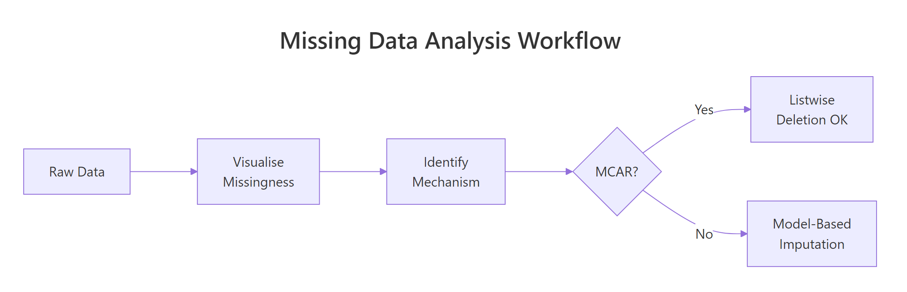
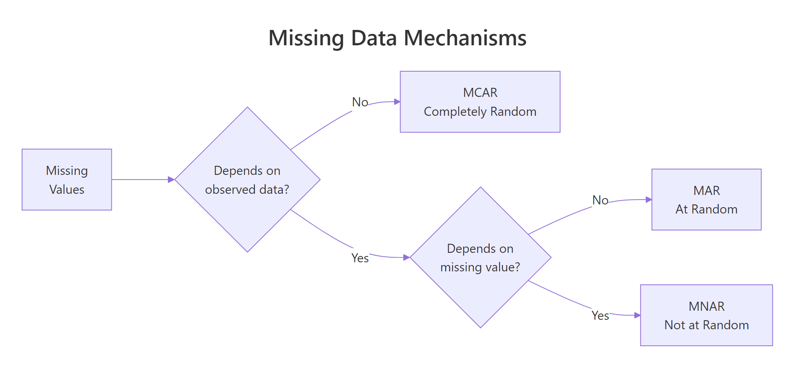
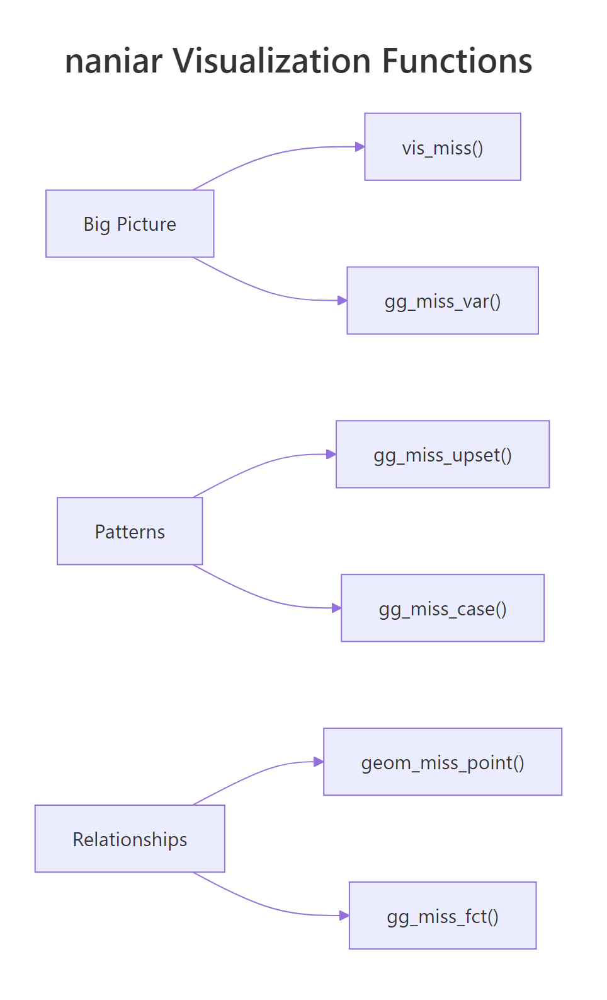

Visualise Your Missing Data in R: naniar Reveals Patterns in 3 Lines
naniar is an R package that turns invisible NA values into clear, publication-ready visualizations, showing you where data is missing, how much is missing, and whether the gaps follow a pattern, so you can choose the right imputation strategy instead of guessing.
Introduction
You cannot fix what you cannot see. Most analysts skip straight to imputation, mean filling, deletion, mice, without first looking at their missing data. That is like prescribing medicine without diagnosing the illness. The pattern of missingness determines which fix is valid, and the wrong fix biases every result downstream.
The naniar package, created by Nicholas Tierney, gives you a grammar of missingness built on top of ggplot2. With three or four function calls you get heatmaps of every NA, bar charts ranking the worst variables, upset plots exposing which columns go missing together, and scatter plots that make invisible NAs visible alongside your real data.

Figure 3: The missing data analysis workflow: visualize first, identify mechanism, then choose a strategy.
In this tutorial you will learn the three missing data mechanisms (MCAR, MAR, MNAR), then master six naniar visualization functions: vis_miss(), gg_miss_var(), gg_miss_upset(), geom_miss_point(), gg_miss_case(), and miss_var_summary(). Every code block runs in your browser. Click Run on the first block, then work top to bottom, variables carry over between blocks like a notebook.
install.packages("naniar"). Base R and ggplot2 examples run directly in your browser.What are the three missing data mechanisms (MCAR, MAR, MNAR)?
Before you visualize anything, you need a mental model for why data goes missing. Statisticians classify missingness into three mechanisms, and each one changes what you can safely do about it.

Figure 1: MCAR, MAR, and MNAR differ by what drives the missingness.
MCAR (Missing Completely at Random) means the probability of a value being missing has nothing to do with any variable in your dataset. Think of a lab technician who accidentally drops test tubes at random. The missing results are unrelated to the patient's health or any other measurement. With MCAR, deleting incomplete rows is safe because the remaining data is still representative.
MAR (Missing at Random) means the probability of missingness depends on other observed variables but not on the missing value itself. For example, younger survey respondents might skip the income question more often. Income is missing, but you can predict which rows are missing from the age column. With MAR, deletion biases your results. You need model-based imputation that conditions on the observed predictors.
MNAR (Missing Not at Random) means the probability of missingness depends on the unobserved value itself. High-income earners hide their income precisely because it is high. This is the hardest mechanism to handle because the missingness pattern cannot be fully explained by the data you have.
Let's create a sample dataset that demonstrates how to inspect missing values using base R before we bring in naniar.
The airquality dataset has 153 rows and 6 columns. Ozone is missing 37 values (24%) and Solar.R is missing 7 values (5%). The other four columns are complete. These numbers are useful, but they do not tell you where the NAs cluster or whether Ozone and Solar.R go missing together. That is where naniar's visualizations come in.
Try it: Without using any package, write a one-liner that counts how many rows have at least one NA. Store the result in ex_incomplete_count.
Click to reveal solution
Explanation: complete.cases() returns TRUE for rows with zero NAs. Negating and summing counts the incomplete rows.
How does vis_miss() reveal the big picture of your missing data?
The vis_miss() function creates a heatmap of your entire dataset. Each cell is either black (missing) or grey (present). You see the full matrix at a glance, which variables have gaps, how the gaps are distributed across rows, and whether they cluster in specific regions.
Think of it as an X-ray of your data frame. One plot replaces dozens of is.na() calls.
The plot shows Ozone with a thick band of black marks scattered through the rows, and Solar.R with a few isolated black marks. The remaining four columns are completely grey. The percentages along the bottom confirm what colSums(is.na()) told us, but the spatial layout reveals something new: the Ozone NAs are not evenly spread, they cluster in certain row ranges.
Now let's sort and cluster the missing values to make patterns even more obvious.
With sort_miss = TRUE, the most-missing column moves to the left. With cluster = TRUE, rows with similar missingness patterns group together. Now you can see two distinct clusters: rows where only Ozone is missing, and rows where both Ozone and Solar.R are missing at the same time. That co-occurrence is a clue about the mechanism.
Try it: Run vis_miss() on the built-in airquality dataset but only for the months of July and August (Month == 7 or Month == 8). Store the filtered data in ex_summer.
Click to reveal solution
Explanation: Filtering to summer months shows that Ozone missingness persists across seasons, but Solar.R is mostly complete in July-August. This suggests month-dependent missingness for Solar.R (a MAR signal).
How does gg_miss_var() rank variables by missingness?
While vis_miss() shows the spatial layout, gg_miss_var() answers a simpler question: which variables have the most missing values? It draws a horizontal bar chart with one bar per column, ranked from most to least missing.
Ozone dominates with 37 missing values. Solar.R has 7. The other four are complete. This ranking helps you prioritize: Ozone needs the most attention.
You can switch from counts to percentages with one argument.
The real power of gg_miss_var() appears when you facet by a grouping variable. This lets you compare missingness across subgroups, a direct test for MAR patterns.
The faceted plot shows that Ozone missingness varies by month, June is the worst and August is the best. If missingness were MCAR, you would expect roughly equal rates across months. The fact that it varies suggests the Ozone NAs are at least MAR (dependent on the Month variable).
Try it: Create a gg_miss_var() plot of airquality that shows percentages and is faceted by Month. Add a title using + ggtitle("your title"). Store the plot in ex_faceted_plot.
Click to reveal solution
Explanation: Because gg_miss_var() returns a ggplot object, you can chain any ggplot2 layer onto it, including titles, themes, and axis labels.
How does gg_miss_upset() expose co-occurrence patterns?
A bar chart tells you how much each variable is missing. An upset plot tells you which combinations of variables go missing together. This is crucial because co-occurring missingness often signals that the missing data mechanism is MAR or MNAR rather than MCAR.
The gg_miss_upset() function creates an upset plot, a modern alternative to Venn diagrams that scales to many variables. The bottom grid shows which variables are involved in each combination. The bars above show how many rows match that combination.
The upset plot reveals three missingness patterns. The dominant pattern is "Ozone missing alone" (about 35 rows). A smaller pattern is "Solar.R missing alone" (about 5 rows). The smallest pattern is "both Ozone and Solar.R missing together" (about 2 rows). The co-occurrence of Ozone and Solar.R is infrequent, suggesting they are mostly missing independently.
For datasets with many variables, you can control how many variable sets and intersections to display.
Try it: The riskfactors dataset (bundled with naniar) has many more missing patterns. Run gg_miss_upset(riskfactors, nsets = 5, nintersects = 5) and note which variable combination has the most co-occurring NAs.
Click to reveal solution
Explanation: The riskfactors dataset contains health survey data where respondents who skip one lifestyle question tend to skip related ones. The upset plot makes these clusters visible immediately.
How does geom_miss_point() make NAs visible in scatter plots?
Standard scatter plots silently drop NA values. If Ozone is NA for a row, that row vanishes from any plot involving Ozone. You see fewer points than you expect, but the plot never tells you why. geom_miss_point() fixes this by shifting missing values to a position 10% below the data range and coloring them differently.
Now you see the full picture. The dark points in the main cloud are complete cases. The orange points along the bottom are rows where Solar.R is missing (shifted below the y-axis range). The orange points along the left are rows where Ozone is missing (shifted below the x-axis range). The cluster in the bottom-left corner represents rows where both are missing.
You can facet geom_miss_point() to check whether the missingness pattern changes across groups.
The faceted view confirms that May and June have the highest concentrations of missing Ozone values. In July through September, most points are complete. This month-dependent pattern is consistent with a MAR mechanism.
Try it: Create a geom_miss_point() scatter plot of Wind vs Temp from aq. Since neither Wind nor Temp has NAs, you should see zero shifted points. Store the plot in ex_complete_scatter.
Click to reveal solution
Explanation: When both variables are complete, geom_miss_point() behaves exactly like geom_point(). This confirms the function only shifts values that are actually NA.
How do gg_miss_case() and miss_var_summary() give you numeric summaries?
Visualizations show patterns, but sometimes you need exact numbers. The naniar package provides tidy summary functions that return tibbles you can pipe into further analysis.

Figure 2: naniar organizes visualization functions by scope: big picture, patterns, and relationships.
gg_miss_case() draws a bar chart of missing values per row (case). This tells you whether missingness concentrates in a few rows or spreads evenly.
Most rows are complete. About 35 rows have exactly one missing value (usually Ozone), and only 2 rows have two missing values (both Ozone and Solar.R). This is encouraging, the missingness does not concentrate in a small group of heavily-incomplete rows.
For precise numbers, use miss_var_summary() and miss_case_summary(). Both return tidy tibbles.
Row 5 has 2 missing values out of 6 columns (33.3%). These summary tibbles are perfect for filtering. You could pipe miss_case_summary() into filter(pct_miss > 50) to find rows that are more missing than present.
miss_var_summary(aq) |> filter(n_miss > 0) gives you only the variables that have at least one NA.Try it: Use miss_case_summary() to find all rows in aq where the percentage of missing values is greater than 0. Store the result in ex_incomplete_rows and count how many rows there are.
Click to reveal solution
Explanation: miss_case_summary() returns one row per case with pct_miss. Filtering where pct_miss > 0 keeps only incomplete rows. The count matches our earlier sum(!complete.cases(aq)) result.
Common Mistakes and How to Fix Them
Mistake 1: Deleting rows without checking the mechanism first
❌ Wrong:
Why it is wrong: You dropped 42 rows (27% of the data). If the missingness is MAR or MNAR, the remaining 111 rows are not representative. Your downstream statistics will be biased because you systematically excluded certain conditions (like low-ozone days).
✅ Correct:
Mistake 2: Using na.rm = TRUE everywhere without investigating
❌ Wrong:
Why it is wrong: The mean of 42.1 only reflects the 116 non-missing Ozone values. If the 37 missing values tend to be low (because monitoring equipment fails on low-ozone days), the true mean is lower. Using na.rm = TRUE blindly hides this bias.
✅ Correct:
Mistake 3: Interpreting geom_miss_point shifted positions as real values
❌ Wrong: "The plot shows that rows with missing Ozone have Solar.R values clustered around -30."
Why it is wrong: The -30 position is an artificial shift (10% below the axis minimum). The actual Solar.R values for those rows are present and real. The shift is purely visual.
✅ Correct: "The plot shows that rows with missing Ozone (shown as shifted orange points) span the full range of Solar.R values, suggesting Ozone missingness does not depend on Solar.R."
Mistake 4: Running vis_miss() on huge datasets without sampling
❌ Wrong:
Why it is wrong: vis_miss() renders one cell per observation per variable. A million-row dataset with 20 columns generates 20 million cells. The plot takes minutes and the individual cells are invisible.
✅ Correct:
Practice Exercises
Exercise 1: Build a complete missingness profile
Use the airquality dataset to create a three-part missingness profile: (1) a vis_miss heatmap with sorting and clustering, (2) a gg_miss_var bar chart with percentages faceted by Month, and (3) an upset plot. Based on all three, state whether you think the Ozone missingness is MCAR, MAR, or MNAR.
Click to reveal solution
Explanation: The three plots build a converging case. The heatmap shows clustering, the faceted bar chart quantifies group differences, and the upset plot reveals co-occurrence. Together they point to MAR rather than MCAR.
Exercise 2: Compare missingness across groups with geom_miss_point
Create a faceted geom_miss_point() scatter plot comparing Ozone vs Solar.R across two groups: early summer (Month 5-6) and late summer (Month 7-9). Add a column called period to the data frame first. Does the pattern of shifted (missing) points differ between periods?
Click to reveal solution
Explanation: Early summer (May-June) shows noticeably more shifted Ozone points than late summer (July-September). This visual comparison confirms the MAR hypothesis, Ozone missingness depends on the time of year.
Exercise 3: Write a reusable missingness report function
Write a function my_miss_report(df) that takes any data frame and prints: (1) total rows and columns, (2) overall missingness percentage, (3) the top 3 most-missing variables with their counts and percentages. Use only base R (no naniar needed).
Click to reveal solution
Explanation: The function uses colSums(is.na()) for per-variable counts, sorts descending, and prints the top 3. This base-R approach works without any packages and runs anywhere.
Putting It All Together
Let's walk through a complete missing data exploration from start to finish. We will load the data, get the big picture, drill into variables and patterns, check relationships, and arrive at a mechanism diagnosis.
We know 42 rows have at least one NA. Let's see the spatial layout.
Now check whether missingness rates change across months.
Finally, check whether the missing Ozone values correlate with Solar.R.
This six-step workflow, counts, heatmap, ranking, group comparison, co-occurrence, relationship check, gives you a complete picture in under 10 minutes. The naniar functions do the heavy lifting, but the interpretation is yours.
Summary
| Function | Purpose | Key Argument |
|---|---|---|
vis_miss() |
Heatmap of entire dataset | sort_miss, cluster |
gg_miss_var() |
Bar chart: NAs per variable | show_pct, facet |
gg_miss_upset() |
Upset plot: co-occurring NAs | nsets, nintersects |
geom_miss_point() |
Scatter plot with shifted NAs | Works inside ggplot() |
gg_miss_case() |
Bar chart: NAs per row | show_pct |
miss_var_summary() |
Tidy tibble: variable stats | Returns tibble for piping |
miss_case_summary() |
Tidy tibble: case stats | Returns tibble for piping |
Key takeaways:
- Always visualize missingness before imputing or deleting. The pattern determines the valid approach.
- MCAR allows deletion. MAR requires model-based imputation. MNAR needs sensitivity analysis.
vis_miss()with sorting and clustering is the single best first step.- Faceting any naniar plot by a grouping variable is the fastest visual MAR test.
- Co-occurring missingness (upset plots) suggests non-random mechanisms.
FAQ
Can naniar handle large datasets efficiently?
For datasets under 50,000 rows, all naniar functions work smoothly. For larger datasets, vis_miss() becomes slow because it renders every cell. Sample your data first: vis_miss(df[sample(nrow(df), 5000), ]). The summary functions (miss_var_summary, miss_case_summary) scale well to millions of rows because they compute aggregates, not cell-level plots.
What is the difference between naniar and visdat?
Both were created by Nicholas Tierney. The visdat package provides vis_dat() (showing data types and missingness together) and vis_miss(). The naniar package includes everything in visdat plus many more functions: upset plots, shadow data structures, geom_miss_point, and tidy summary functions. For missing data work, naniar is the more complete choice.
How do I export naniar plots for publication?
All naniar gg_miss_* functions return ggplot objects. Save them with ggsave("my_plot.png", width = 8, height = 6, dpi = 300). For vis_miss(), assign the result first: p <- vis_miss(df) then ggsave("vis_miss.png", p).
Does naniar work with non-NA missing codes like -999 or ""?
Not directly. naniar treats only R's NA as missing. Convert non-standard codes first: df$col[df$col == -999] <- NA or use naniar's replace_with_na() function: replace_with_na(df, replace = list(col = -999)). After conversion, all naniar functions work normally.
Can I use naniar with data.table?
Yes. naniar functions accept data.tables because they inherit from data.frame. However, the returned summaries are tibbles. If you need data.table output, wrap the result: as.data.table(miss_var_summary(dt)).
References
- Tierney, N.J. & Cook, D., Expanding Tidy Data Principles to Facilitate Missing Data Exploration, Visualization and Assessment of Imputations. Journal of Statistical Software (2023). Link
- naniar package documentation, CRAN. Link
- Tierney, N.J., Gallery of Missing Data Visualisations. naniar vignette. Link
- Little, R.J.A. & Rubin, D.B., Statistical Analysis with Missing Data, 3rd Edition. Wiley (2019).
- Rubin, D.B., Multiple Imputation for Nonresponse in Surveys. Wiley (1987).
- Wickham, H. & Grolemund, G., R for Data Science, 2nd Edition. O'Reilly (2023). Chapter 18: Missing Values. Link
- Tierney, N.J., The Missing Book: Exploring Missing Data. Link
Continue Learning
- Missing Values in R: Detect, Count, Remove, and Impute NA, Once you know the pattern, this tutorial covers the full toolkit:
is.na(),complete.cases(),na.omit(), and mice imputation. - Statistical Tests in R, Many statistical tests handle missing data differently. Learn which tests are robust to NAs and which require complete cases.